2013年1月17日，中央编译局局长衣俊卿因被情妇曝光与局内多位女性淫乱被解职。在中共十八大新班子上任后，衣俊卿是继李春城之后第二位被拉下马的副部级高官。近日，更有民众在中央编译局官网上搜出材料中涉及到的编译局的其他与衣俊卿关系尚好的女下属。
女博士主动献身 常艳网上自爆与中央编译局长衣俊卿婚外情(点击上图阅览全文)
去年12月上旬，中央编译局女博士后常艳在网上发表了长达十二万字的举报材料 (在线阅读 或 全文下载)，称与其上司中央编译局局长衣俊卿发生了婚外情，曾在酒店开房17次。材料中还披露了衣俊卿同时与局中多位女下属淫乱以及衣与中共高官的关系。
女博士主动献身 常艳网上自爆与中央编译局长衣俊卿婚外情(点击上图阅览全文)
继常艳材料“衣俊卿不止我一个女人，江洋不是他的唯一”中的江洋遭“人肉”后，近日，更有民众在中央编译局官网上搜出材料中涉及到的编译局的其它与衣俊卿关系尚好的女下属。
以下是网爆的衣俊卿在中央编译局的女下属（并非都跟局长有染）：

1、江洋，中央编译局当代马克思主义研究所助理研究员。常艳小说中提到的“衣俊卿不止我一个女人，江洋不是他的唯一”。
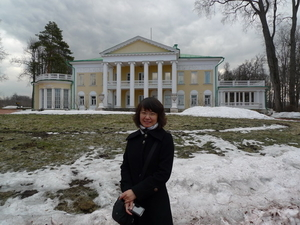
2、姚颖，被曝与衣俊卿关系最好。任中共中央编译局办公厅研究室副研究员，中国人民大学哲学博士，中共中央编译局哲学博士后。
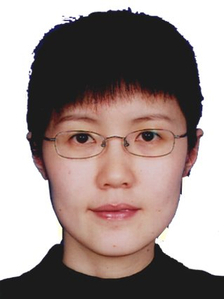
3、陈雪莲，1978年6月出生，中央编译局世界发展战略研究部，副研究员，中央编译局比较政治与经济研究中心，社会调查研究室主任。曾就读于德国图宾根大学（TuebingenUniversity）大中华研究中心，博士候选人。
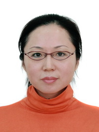
4、杜雪峰，副译审，中央编译局中央文献翻译部西文处副处长，西班牙、葡萄牙、拉丁美洲文学研究会理事。
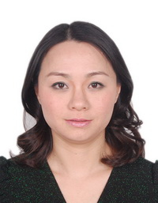
5、谢海静，副译审，中央编译局中央文献翻译部日文处一级翻译
6、于春伟，一级翻译，毕业于北京外国语大学西语系西班牙语专业
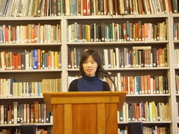
7、黄晓武，清华大学中文系现当代文学专业博士。2011年4月，任中央编译局《马克思主义与现实》杂志副主编。
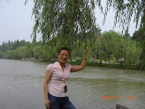
8、彭萍萍，博士，马克思主义研究部副编审
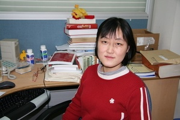
9、王新颖，中央编译局海外理论信息研究中心副主任，副编审，毕业于首都师范大学俄罗斯语言文学专业，硕士
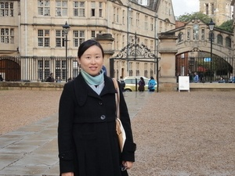
10、李姿姿，副研究员，中国人民大学国际关系学院博士，2007年进入中央编译局马克思主义研究部工作
11、蒋明炜，副译审，中央编译局中央文献翻译部法文处副处长。毕业于北京外国语大学法语系。
12、王丽丽，副译审，中央编译局中央文献翻译部英文处副处长，毕业于北京语言大学。
13、刘冰，副译审，中央编译局中央文献翻译部法文处副处长，毕业于北京外国语大学法语系。
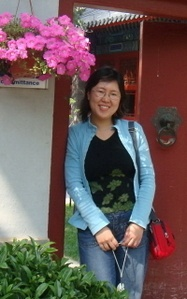
14、王晓妮，副译审，中央编译局中央文献翻译部西文处副处长，毕业于西安外国语大学
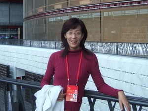
15、徐燕霞，中央编译局中央文献翻译部俄文处副译审，毕业于北京外国语大学俄语系
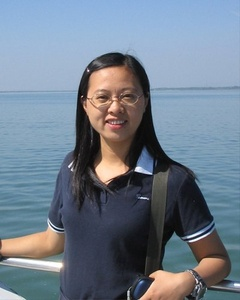
16、周红云，博士，研究员。中央编译局世界发展战略研究部社会发展研究处处长、中央编译局比较政治与经济研究中心副主任、社会创新研究室主任
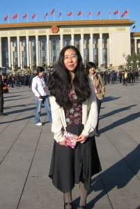
17、赵晶旸，译审，中央编译局中央文献翻译部工作人员，毕业于吉林大学
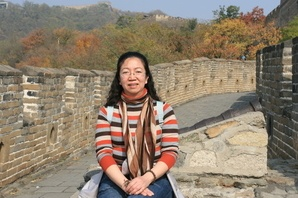
18、章林，编审，任职于中央编译局马列部，现任马列部资料编辑处处长，毕业于北京外国语学院德语系
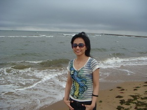
19、夏静，译审，任职于中央编译局马列部，现任马列部编译二处处长，毕业于上海外国语学院德语系
20、张文红，研究员，法学博士，中央编译局政党研究中心主任助理。
21、郭伟伟，博士，研究员。中央编译局世界发展战略研究部研究员，全球治理与发展战略研究中心主任助理。1999年毕业于中国人民大学，获法学博士学位。
22、徐向梅，中央编译局俄罗斯研究中心执行主任，经济学博士，研究员。
23、李百玲，副研究员、哲学博士。主持国家社会科学基金项目1项，中央编译局社会科学基金项目2项。
中央编译局是干什么的?
据《维基百科》介绍，中共中央编译局，全称为中共中央马克思、恩格斯、列宁、斯大林着作编译局，简称中央编译局。是中共中央直属的事业单位，成立于 1953年，前身是1949年创立的中央俄文编译局。主要职能是编译、研究马克思主义经典着作与理论，翻译中共和国家重要文献和领导人着作。
衣俊卿事件发生后，大陆民众纷纷在网络发起热议，对中央编译局的理解有各种解读。